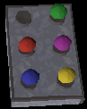
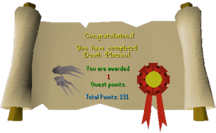

Death Plateau
Description: Trolls have come down from the north and are camped on Death Plateau. They are using this base to launch attacks on the principality of Burthorpe! The Imperial Guard is taking heavy losses. They need your help!Difficulty: Novice
Length: Medium
Items & Skills Needed:
Recommended:
- Able to hold your own against trolls, Protect from Missiles if you wish to fight the trolls
Reward: 1 quest point, 3k attack exp, the ability to make claws depending on your smithing level, a pair of steel claws, and membership to the Imperial Forces
Instructions:
Speak to Denulth and begin the quest.
He asks you to help find another way up the Death Plateau and to find the combination the guard lost.
He asks you to help find another way up the Death Plateau and to find the combination the guard lost.
Head to the nearby castle to the north and go upstairs.
Talk to Eohric, the person in the purple clothes, and ask him "Where is the guard that was on last night staying?"
He tells you his name is Harold and he is at the Toad and Chicken Inn.
Talk to Eohric, the person in the purple clothes, and ask him "Where is the guard that was on last night staying?"
He tells you his name is Harold and he is at the Toad and Chicken Inn.
Go back outside the castle and head south and a little east to the inn.
Head upstairs and go to the west most room and enter it. Speak to Harold about the lost combination but he will tell you he doesn't want to talk about it.
Head upstairs and go to the west most room and enter it. Speak to Harold about the lost combination but he will tell you he doesn't want to talk about it.
Go back and speak to Eohric in the castle and he tells you that Harold will open up a bit if you give him a drink and that he also likes gambling.
If you havent already, go buy some Asgarnian Ales at the inn and give them to Harold (He might ask for the Blurberry Special but he didn't for me).
If you havent already, go buy some Asgarnian Ales at the inn and give them to Harold (He might ask for the Blurberry Special but he didn't for me).
Now gamble a few times with him until he gives you an IOU (I wagered 200gp each time and won twice to get it).
Read the IOU and find out that on the back of it is the combination!
Read the IOU and find out that on the back of it is the combination!
This is what it says:

This is the solution:

Go back and speak to Denulth so you know what you need to do for the rest of the quest.
He says now you need to find the way to the plateau.
He says now you need to find the way to the plateau.
Head over to the west and you will see a cave. Enter it and talk to Saba.
He tells you to find the Sherpa.
He tells you to find the Sherpa.
To find the the Sherpa:
Journey up to the Death Plateau until you see a wounded soldier.
As soon as you see him walk west on the southern path.
As soon as you see him walk west on the southern path.
There is a door at the end, knock on it, and Tenzing the Sherpa will let you in if you tell him that you are not the milkman.
Ask him about the path leading up the plateau and he will say that there is one but he will not tell you until you run an errand for him.
He will then request that you bring him 10 cooked trout and 10 bread and that you also must fix his climbing boots at the the blacksmith, Dunstan.
Ask him about the path leading up the plateau and he will say that there is one but he will not tell you until you run an errand for him.
He will then request that you bring him 10 cooked trout and 10 bread and that you also must fix his climbing boots at the the blacksmith, Dunstan.
Head over to the blacksmith and speak with Dunstan.
He refuses to fix the boots since Tenzing has not yet given him the payment for the previous pair of boots.
He eventually says he will fix them if you get his son into the army.
He refuses to fix the boots since Tenzing has not yet given him the payment for the previous pair of boots.
He eventually says he will fix them if you get his son into the army.
Talk to Denulth and you will receive a certificate which will allow Dunstan's son to be in the army.
Head back to Dunstan and give him the certificate.
He will say that he will fix the boots if you bring him a iron bar.
Give him the iron bar and the boots and he will give you the fixed boots.
He will say that he will fix the boots if you bring him a iron bar.
Give him the iron bar and the boots and he will give you the fixed boots.
Go back to Tenzing with the 10 bread, 10 cooked trout, and the repaired boots.
He will then give you a map which shows the secret path up the plateau.
He will then give you a map which shows the secret path up the plateau.
Exit the back of his house to the North and then follow the path straight.
After a tedious amount of walking you will receive a message that you have walked far enough and that you should go back to Denulth.
After a tedious amount of walking you will receive a message that you have walked far enough and that you should go back to Denulth.
Speak with Denulth, and give him the Secret Way Map and the combination for your reward.
Congratulations, Quest Complete!

This quest guide was written by Im4eversmart and leaderofdarkness . Thanks to Henry_n and EverettP for corrections.
This quest guide was entered into the database on Mon, Aug 09, 2004, at 10:33:21 PM by xxtigurxx and was last updated on Mon, Dec 13, 2004, at 04:44:07 AM by MrStormy.